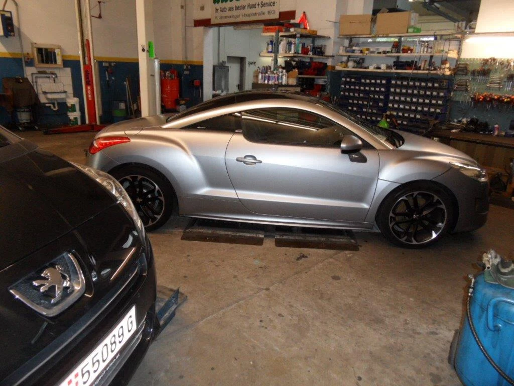
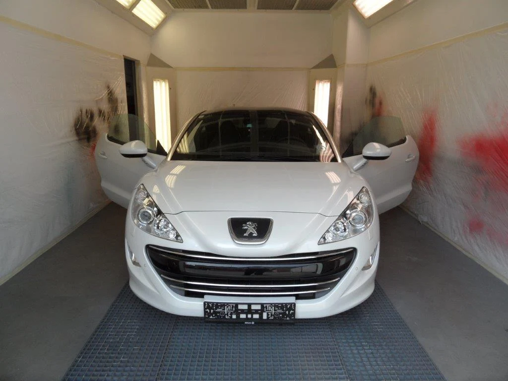
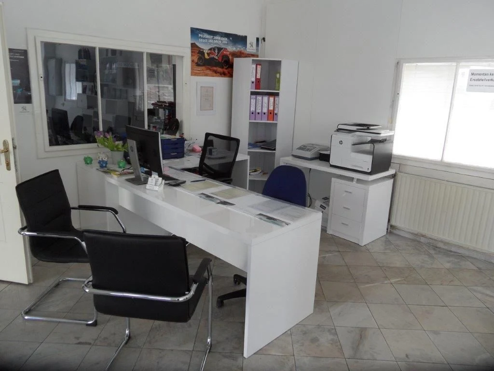
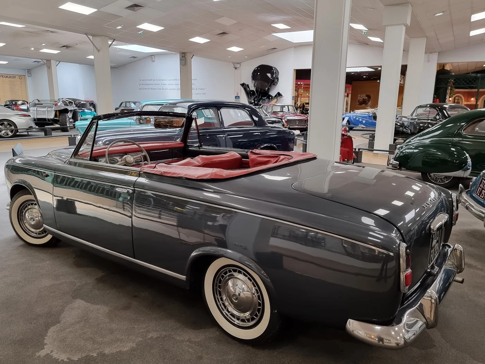

Gut betreut.
Für jede Fahrt.
Service, Pickerl und Reparatur in Wien-Simmering.
Peugeot-Erfahrung und persönliche Betreuung für Ihr Auto.
Ihr Auto im Blick.
Ihr Alltag auch.
Eine Werkstatt für die nächste Wartung – und für die Fragen dazwischen.
Ob Service fällig ist, eine Warnleuchte aufleuchtet oder ein Schaden repariert werden muss: Bei Ing. Bezensek finden Sie technische Erfahrung und einen persönlichen Ansprechpartner. Peugeot ist der Schwerpunkt; auch Citroën und weitere Marken sind willkommen.
Ihr Anliegen besprechenFür Ihren Alltag.
Für Ihre Sicherheit.
Wartung, Überprüfung oder Reparatur:
finden Sie den passenden nächsten Schritt.
Unsicher, welche Arbeit nötig ist? Besprechen Sie Ihr Anliegen direkt mit uns.
01 / 769 25 01 anrufen


ING. BEZENSEK · PERSÖNLICH FÜR SIE DAEin Ansprechpartner.
Von Anfang an.
Ihr Anliegen wird persönlich besprochen.
Ing. Alexander Bezensek ist als Inhaber und KFZ-Meister im Betrieb tätig. Das Team verfügt über langjährige Erfahrung, besonders mit Peugeot, Citroën und DS. So können Sie Wartung und Reparatur direkt mit der Werkstatt abstimmen.
Hochvolt-2-Ausbildung für Arbeiten an Elektrofahrzeugen laut Betriebswebsite. Fragen Sie nach dem passenden Service für Ihr Modell.
Wieder in Form.
Wieder unterwegs.
Ein Kratzer, ein Hagelschaden oder ein Unfall: Besprechen Sie mit uns, wie Ihr Fahrzeug instand gesetzt werden kann.
Reparatur besprechenDen Schaden einordnen
Nennen Sie Fahrzeug und Schadensbild. Die Werkstatt bespricht den passenden Reparaturweg mit Ihnen.
Die passende Methode wählen
Karosseriereparatur, lackierfreies Ausbeulen, Spotrepair oder Lackierung – je nach Schaden und Fahrzeug.
Die Abwicklung klären
Eine direkte Verrechnung mit der Versicherung ist laut Betrieb möglich. Fragen Sie nach dem Ablauf für Ihren Fall.
Ihr Wunschfahrzeug.
Persönlich beraten.
Neuwagen entdecken. Gebrauchtwagen vergleichen.
Sie suchen ein anderes Fahrzeug? Informieren Sie sich über die Peugeot-Modellwelt oder sehen Sie das Gebrauchtwagenangebot auf der bisherigen Website. Beratung und Probefahrt stimmen Sie direkt mit dem Betrieb ab.

FAHRZEUGE MIT CHARAKTERIhre Fragen.
Klare Antworten.
Noch etwas offen? Wir helfen Ihnen persönlich weiter.
Bezensek kontaktierenBetreuen Sie nur Peugeot und Citroën?+
Peugeot ist der Schwerpunkt als Vertragswerkstatt. Als freie Werkstatt betreut Bezensek außerdem Citroën, DS und weitere Marken. Nennen Sie uns Ihr Fahrzeug bei der Anfrage.
Wie kann ich einen Termin vereinbaren?+
Rufen Sie unter 01 / 769 25 01 an oder schreiben Sie an office@bezensek.at. Fahrzeugmodell, gewünschte Arbeit und Wunschtermin helfen bei der Abstimmung. Der Termin wird persönlich bestätigt.
Für welche Fahrzeuge ist die Pickerl-Überprüfung möglich?+
Laut Leistungsseite für Motorräder, Pkw und Lkw bis 2,8 Tonnen. Bitte bestätigen Sie bei der Anfrage, dass die Werkstatt Ihr Fahrzeug überprüfen kann.
Können Sie einen Unfallschaden reparieren?+
Ja. Zum Angebot gehören Karosserie- und Lackarbeiten, Hagelschäden, Spotrepair und Windschutzscheiben. Die mögliche direkte Verrechnung mit Ihrer Versicherung stimmen Sie mit der Werkstatt ab.
Werden auch Elektrofahrzeuge betreut?+
Der Betrieb nennt Hochvolt-2-Ausbildung und Berechtigung zur Reparatur von Tesla und anderen Elektrofahrzeugen. Bitte fragen Sie nach den konkreten Arbeiten für Ihr Modell.
Ihre Werkstatt.
Mitten in Simmering.
Ein Anruf oder eine E-Mail.
Der erste Schritt zu Ihrem Termin.
Simmeringer Hauptstraße 193
1110 Wien
Route in Google MapsService, Pickerl, Reparatur oder Fahrzeugberatung: Stimmen Sie Ihr Anliegen direkt mit uns ab.
Unsere Öffnungszeiten
TERMIN ANFRAGEN- Montag–Donnerstag
- 07:00–18:00 Uhr
- Freitag
- 07:00–13:00 Uhr
- Samstag & Sonntag
- Geschlossen
Nennen Sie Fahrzeugmodell, gewünschten Service und Wunschtermin. Wir stimmen die Details persönlich mit Ihnen ab.
Gut betreut.
Vom ersten Kontakt an.
Wartung, Pickerl oder Reparatur: Besprechen Sie mit uns, was Ihr Auto braucht.